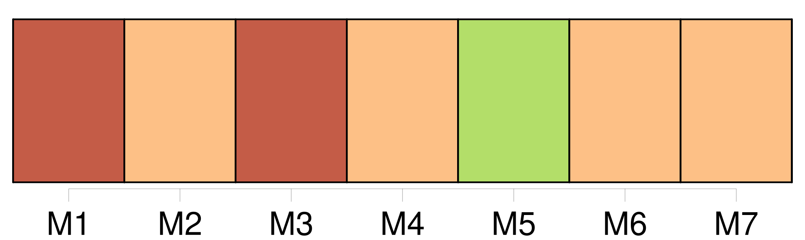

Longueur nb maillons : 101 mentions |
  |
J'abaissai de nouveau les paupières, espérant que tout cela disparaîtrait et que j'allais me retrouver chez [mes parents] , dans la pièce un peu sombre où étaient les lits de mes frères et sœurs, et dans tous les coins, entassés pêle-mêle, des jouets de toutes sortes et de toute couleur. [11 phrases] Je revis mon frère, le doux Firmin, pâle et comme pétrifié, tendant vers [eux] ses mains frêles. [1 phrases]
Puis je me revis moi -même lancée entre [mes parents] pour [les] séparer, et je crus sentir de nouveau le choc qui m'avait jetée à terre ainsi que le poids énorme de [deux créatures en furie] [que] ma chute avait entraînées et [qui] s'étaient abattues ensemble sur moi. [4 phrases] J'écoutais le pas glissé de [deux personnes] [qui] cherchaient à s'éloigner sans bruit.
J'étais sûre que c'étaient [mon père et ma mère] [qui] s'en allaient ainsi, et malgré la douleur de ma hanche, je voulus me dresser pour [les] appeler, mais le médecin appuya des deux mains sur ma poitrine, en disant :
Penché sur moi, il me cachait une partie de la salle, mais dans l'ouverture que formait l'un de ses bras, je voyais [mes parents] gagner la sortie. [1 phrases] comme [ils] avaient l'air malheureux!! [4 phrases] La présence même de [mes parents] me laissait indifférente. [20 phrases]
Heureusement, [mes parents] amenèrent bientôt avec [eux] toute la petite famille. [2 phrases] C'est grand-mère qui nous avait élevés tandis que [nos parents] travaillaient. [1 phrases] Ainsi, tout avait bien marché, [nos parents très unis] ne se plaisaient qu'auprès de nous. [3 phrases]
Des discussions, puis de véritables disputes s'étaient élevées entre [nos parents] et cela n'avait fait qu'augmenter jusqu'au jour où face à face, comme deux ennemis aveuglés de rage, [ils] avaient été si près de se frapper.
Maintenant la paix paraissait faite entre [eux] , [ils] se parlaient avec douceur et toute trace de rancune était effacée de [leur] visage. [1 phrases] Firmin était certainement celui de nous qui avait le plus souffert de la désunion de [nos parents] Il [les] aimait [l'un et l'autre] d'un amour infini, et [leurs] disputes l'avaient souvent affecté au point de le rendre malade. [51 phrases] Pour éviter la contagion, [nos parents] avaient installé les trois autres à l'autre bout de l'appartement avec défense d'entrer dans notre chambre. [7 phrases]
Angèle se lassa de les entendre ; malgré la défense de [nos parents] elle entr'ouvrit soudain notre porte et nous dit l'air indigné : [4 phrases]
Je me revoyais déjà de retour à la maison où je retrouvais la gaieté si amusante de mon frère, les caresses des deux petits, et enfin toute la tendresse de [mes parents] avec [leur] bon accord revenu. [6 phrases] Dans un instant, [mon père et ma mère] viendront me prendre pour me conduire au moulin de la Haie, chez oncle meunier, où je continuerai à vivre étendue, en attendant ma complète guérison. [2 phrases]
À [mes parents anxieux des suites de l'accident] , il a répondu d'un ton sec : [7 phrases]
[Mes parents] marchent de chaque côté de moi, et [leur] pas, et celui d'oncle meunier font à peine plus de bruit sur le gravier que les roues caoutchoutées de ma voiture. [7 phrases]
Et sans un mot de bienvenue à [mes parents] , elle passe la barrière, et marche en avant comme si nous ne connaissions pas le chemin, et qu'elle fût venue seulement pour nous le montrer. [3 phrases]
Tante Rude me l'apprend sans douceur, tandis que [mon père et ma mère] , avec des mots affectueux, et mille précautions m'installent dans un lit tout préparé. Mon installation finie, [mes parents] s'en vont au moulin avec tante Rude et oncle meunier. J'entends grincer derrière [eux] la claie du passage. [14 phrases] À l'âge de six ans, alors que [mes parents] m'avaient confiée à tante Rude pour une assez longue convalescence, c'est Manine qui s'était occupée de moi. [18 phrases] [Mes parents] n'ont pas voulu attendre à demain pour repartir. [Tous deux] m'ont dit avant de regagner la gare. [1 phrases]
» Mais, lorsque le train qui [les] emportait commença de rouler dans la campagne, je tendis longuement l'oreille à la dure vibration qu'il laissait derrière lui.
Il me semblait que [mon père et ma mère] tenaient le bout d'une chaîne solidement rivée à ma poitrine, et que c'était cette chaîne -là qui se tendait et vibrait si durement dans l'espace. [23 phrases] Madame Lapierre est une jeune femme infirme, venue à la Haie quelques années plus tôt sur le conseil de [mes parents] [qui] l'ont connue à Paris. [12 phrases] C'est, pour elle, des projets touchant l'avenir de son enfant, et, pour moi, l'espoir de voir arriver aux prochaines vacances, les petits avec [nos parents réconciliés à jamais] [20 phrases] « J'ai d'abord à te dire que [papa et maman] sont toujours bien sages. S' [ils] ne sont pas aussi gais qu'avant c'est parce que tu n'es pas avec nous, cela va de soi. [4 phrases] Elle prétend que c'est pour faire des économies à [nos parents] [1 phrases] qu'elle [leur] fait des économies. [1 phrases] Si c'est ça qu'elle appelle faire des économies à [nos parents] [74 phrases] Pendant son court séjour à Paris, elle avait trouvé le moyen de se rendre chez [mes parents]
Et d' [eux] , et des enfants, elle avait tant à me dire, que la journée passa tout entière avant qu'elle n'eût fini. [5 phrases] [C'] était à [mes parents] que je pensais tout d'abord. Combien [ils] avaient été indulgents et patients lorsque j'avais remplacé grand'mère dans le ménage. [9 phrases] Je m'épouvantais alors de ces petits accidents comme de véritables catastrophes, mais au lieu de me gronder, [mes parents] m'excusaient et m' [encourageaient] à faire mieux. [3 phrases]
Dans ces moments -là les jumeaux restaient tranquilles pour l'écouter, et [nos parents] [eux -mêmes] prenaient plaisir à le voir et à l'entendre. [4 phrases]
Et j'entendais encore le rire éclatant de [nos parents] , et je me souvenais du claquement joyeux des baisers répétés qu' [ils] avaient mis sur nos joues, ce soir -là, au moment du coucher. [11 phrases]
Dans ma précipitation de marcher sans soutien d'aucune sorte, il y avait surtout la hâte de savoir jusqu'à quel point j'étais infirme, car je n'avais pas oublié les paroles du médecin de l'hôpital, ni la sécheresse de sa voix qui était comme un blâme à l'adresse de [mes parents] : « Boiteuse, elle le sera certainement ». [10 phrases]
Je devins maussade ; l'impatience me prit et j'en arrivai bientôt à dire que j'étais assez grande pour agir à ma guise, et que j'allais partir pour Paris sans attendre l'appel de [mes parents] [12 phrases]
Je tenais surtout à remplacer la femme de ménage qui coûtait si cher à [mes parents] , et soignait si mal les enfants. [18 phrases] Les jumeaux m'apercevant s'écartèrent comme apeurés, et [mes parents] détournèrent la tête. [10 phrases] Comme Firmin et Angèle m'entraînaient sur la route, [mes parents] s'arrêtèrent pour me regarder marcher.
J'eus pitié de [leur] visage consterné, et, l'air enjoué, je répétais ce qu'avait dit oncle meunier : La journée passa, rapide ; [mes parents] devaient repartir le soir même, ne pouvant disaient [-ils] perdre une seule journée de travail. [Tous deux] avaient un air soucieux et sévère.
[Ils] restaient à mes côtés de préférence, et s' [ils] avaient à se parler, [ils] le faisaient sans se regarder.
[Ils] mirent au lit les jumeaux, las de grand air et de jeux, et après nous avoir tous embrassés très tendrement, [ils] reprirent le chemin de la gare accompagnés seulement d'oncle meunier. Après [leur] départ, je cessai bientôt d'écouter ce que me disaient Angèle et Firmin. Je suivais par la pensée [nos parents] remontant la route. [Ils] repartaient trop tôt à mon gré. Et, sans réfléchir qu' [ils] étaient partis depuis un bon moment déjà, je me lançai à [leur] poursuite. [2 phrases] Je courus à la petite barrière de sortie et là, j'aperçus [mon père et ma mère] un peu à l'écart. [Leur] visage me parut plus sévère encore, dur même et comme buté.
Oncle meunier placé entre [eux] , le visage sévère aussi [leur] parlait avec des gestes fermes et précis, et il me semblait l'entendre dire, en colère cette fois : [3 phrases]
Oncle meunier sursauta en m'apercevant : [1 phrases]
Une peine qui me serrait la gorge me fit une voix de toute petite fille, lorsque je dis :
Oncle meunier s'indigna :
Je ne pensais qu'à la séparation du wagon, mais devant le ricanement plein de mépris d'oncle meunier, j'eus l'intuition d'une séparation beaucoup plus grave, et, retenant mes pleurs, je répondis : [11 phrases]
La petite somme que m'avaient laissée [mes parents] et qu' [ils] devaient renouveler chaque mois fut dépensée en moins de rien, et je me rendis compte que si je ne gagnais pas moi -même un peu d'argent j'allais être obligée de mesurer la nourriture aux enfants. [3 phrases] Et comment [tes parents] le pourraient [-ils] , [eux] [qui] avaient déjà tant de peine à joindre les deux bouts?? |

|
La ressource peut être téléchargée sur la page Ortolang
Si vous avez des questions ou vous voyez des erreurs, merci d'envoyer un mail à silvia.federzoni89@gmail.com
Site développé par S. Federzoni (contact)